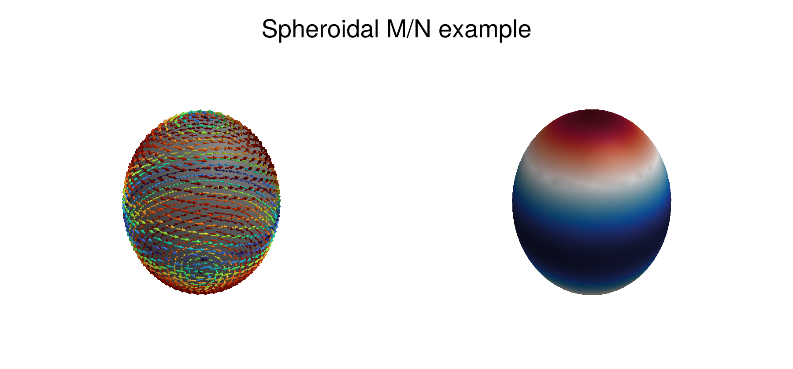

Spheroidal Modes
This section exposes the spheroidal vector-wave API currently available in AnalyticEMModes.jl.
Scope and convention
- Coordinates are local spheroidal
(ξ, η, ϕ)(prolate or oblate). - Base vectors are returned as
(Mξ, Mη, Mϕ, Nξ, Nη, Nϕ). - Available vector families are
:x,:y,:z,:r,:+, and:-;:+and:-are the shifted(m+1)and(m-1)families. - The returned vectors use the standard vector-wave scaling
N = (1/k) curl(M). Book-scale constants are absorbed inside eachMᵃ/Nᵃimplementation. - The low-level
M/Nvectors are provided without enforcing TE/TM physical power normalization. kc_spheroidal()is currently a placeholder and returns0.0.
Single mode evaluation
using AnalyticEMModes
k = 2π
mode = SpheroidalB(1, 1, 2.4) # prolate; for oblate use complex c
ξ, η, ϕ = 1.4, 0.2, 0.8
Mξ, Mη, Mϕ, Nξ, Nη, Nϕ = mn_spheroidal_vector(ξ, η, ϕ, mode, k; family=:z, even=true, radial=4)Batch evaluation on points and basis
using AnalyticEMModes, StaticArrays
k = 2π
points = [SVector(1.3, -0.3, 0.1), SVector(1.5, 0.1, 1.2), SVector(1.9, 0.7, 2.0)]
basis = ProlateSpheroidalBasis(2, 3, 2.4)
A = mn_spheroidal_vectors(points, basis, k; family=:z, even=true, radial=4)
# A[p, i] = (Mξ, Mη, Mϕ, Nξ, Nη, Nϕ) for point p and mode iBuild basis directly from m/n limits
using AnalyticEMModes, StaticArrays
k = 2π
points = [SVector(1.3, -0.2, 0.4), SVector(1.8, 0.4, 1.1)]
A = mn_spheroidal_vectors_mnmax(points, 2, 3, 2.4, k; oblate=false, family=:r, even=false, radial=4)Notes for modal normalization
For spheroidal geometry, the recommended current workflow is:
- Compute raw
M/Nvectors withmn_spheroidal_vector(s)for a chosen family/parity/radial type. - Build the TE/TM convention at the field level (
E/H) on top of those vectors. - Normalize physically by flux/power on the chosen surface.
This keeps the standard curl(M) = kN relation explicit at the raw-basis level.
Visualization on Spheroidal Mesh
f = 10e9
μr, εr = 1.0, 1.0
k = wavenumber(f, μr, εr)
name = "../Assets/mesh/spheroidal_prolate.msh"
coord, conn = mesh_data(name)
coords = coord[:, 1:maximum(conn)]
xcoords = coords[1, :]
ycoords = coords[2, :]
zcoords = coords[3, :]
# Estimate spheroidal focal parameter a from mesh axes (z-major spheroid).
major_axis = maximum(zcoords) - minimum(zcoords)
minor_axis = 2 * maximum(hypot.(xcoords, ycoords))
a = spheroidal_parameter(major_axis, minor_axis)
ξηϕ = map(eachindex(xcoords)) do i
cart2pro(a, xcoords[i], ycoords[i], zcoords[i])
end
ξs = map(t -> t[1], ξηϕ)
ηs = map(t -> t[2], ξηϕ)
ϕs = map(t -> t[3], ξηϕ)
points = to_svector(ξs, ηs, ϕs)
basis = ProlateSpheroidalBasis(4, 7, 2.4)
mn = mn_spheroidal_vectors(points, basis, k; family=:z, even=true, radial=4)
mode_idx = 2
Mcart = map(eachindex(points)) do i
ξ, η, ϕ = points[i]
Mξ, Mη, Mϕ, Nξ, Nη, Nϕ = mn[i, mode_idx]
Mx, My, Mz = prolate_vector_to_cartesian(a, ξ, η, ϕ, Mξ, Mη, Mϕ)
(Mx, My, Mz, Nξ)
end
Mx = map(v -> real(v[1]), Mcart)
My = map(v -> real(v[2]), Mcart)
Mz = map(v -> real(v[3]), Mcart)
Nξ = map(v -> real(v[4]), Mcart)
Mf = map((x, y, z) -> hypot(x, y, z), Mx, My, Mz)
Mf_safe = map(v -> v > 0 ? v : 1.0, Mf)
Mx ./= Mf_safe
My ./= Mf_safe
Mz ./= Mf_safe
fig = Figure(size = (900, 420))
ga = fig[1, 1] = GridLayout()
Label(ga[0, 1:2], "Spheroidal M/N example", fontsize = 28, tellwidth = false)
ax1 = LScene(ga[1, 1], show_axis = false)
mesh!(ax1, coords, conn, color = :gray)
arrows3d!(ax1, xcoords, ycoords, zcoords, 0.08 .* Mx, 0.08 .* My, 0.08 .* Mz, color = Mf, colormap = :turbo)
ax2 = LScene(ga[1, 2], show_axis = false)
mesh!(ax2, coords, conn, color = Nξ, colormap = :balance)
fig